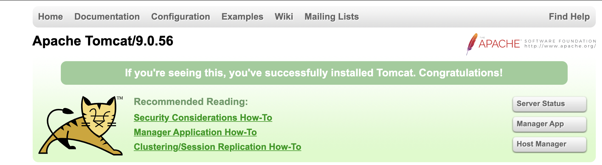

1.5 Revisit The First Java Web Project
In the index.jsp, we notice the following:
<a href="hello-servlet">Hello Servlet</a>
According to what we have learned, the <a> element defines a hyperlink, and the href attribute means the link's destination, so what is the hello-servlet? Please go to the HelloServlet.java in the com.example.demo package under src/main/java.
@WebServlet(name = "helloServlet", value = "/hello-servlet")
public class HelloServlet extends HttpServlet
People with sharp eyes may notice the value = "/hello-servlet". A-ha, hello-servlet, twice. This is not coincidence, and we will investigate this observation in the next chapter.
If we have a close look at this Java file, we should find something acquainted. To be specific, in the doGet method, it outputs the HTML code. So, a servlet is able to generate HTML to the response.
[!TIP] Again,
doGet, as its name implies, will handle the GET request, and we will investigate this observation in the next chapter.
Anatomy of a Java web application
Under the build/libs folder, you can find the first_java_ee-1.0-SNAPSHOT.war, the final web application package. A WAR file (Web Application Resource or Web application ARchive) is a file used to distribute a collection of JAR-files, JavaServer Pages, Java classes, XML files, static web pages (HTML and related files) and other resources that together constitute a web application. In a nutshell, a WAR is a compressed package (like zip and rar), and you can extract the included files from it. The default name of a WAR file is illustrated in Figure 1.17. Notice that you can rename it if you like no matter what the project settings are.
Then how does Tomcat recognize and make use of this file? Please go to the home of Tomcat, under the webapps, then you can find a folder named first_java_ee_1_0_SNAPSHOT_war:
├── index.jsp
├── META-INF
│ └── MANIFEST.MF
| └── war-tracker
├── WEB-INF
| └── web.xml
| └── classes
| └── com
| └── example
| └── demo
| └── HelloServlet.class
The whole story can be described as follows: When we run the application in IntelliJ IDEA, IntelliJ IDEA will build the project and package it to a WAR file, and then copy the WAR file to the webapps folder. Finally, the Tomcat deploys this WAR for serving.
[!NOTE] We can also notice the file structure of developing in IntelliJ IDEA is different from that of running in Tomcat. In fact, you can also this WAR file on any Jakarta EE complaint container (e.g., WildFly and GlassFish).
We can also deploy our web application manually. Make sure you have stopped the application in IntelliJ IDEA , and then copy first_java_ee-1.0-SNAPSHOT.war to your desktop. In case of name conflict, please rename it to test.war.
[!NOTE] It is fine to skip the manual deployment if you are unfamiliar with command line. Also make
Java Homehas been appended intoPATHenvironment variables.
- Step 1: Move
test.warto thewebappsfolder under Tomcat home. - Step 2: Go to the Tomcat home in the terminal, and then
# for Linux/MacOS
./bin/startup.sh
# for Windows
.\bin\startup.bat
It shall display the information similar to the following if everything goes well:
Using CATALINA_BASE: /Users/zhongpu/devs/apache-tomcat-9.0.56
Using CATALINA_HOME: /Users/zhongpu/devs/apache-tomcat-9.0.56
Using CATALINA_TMPDIR: /Users/zhongpu/devs/apache-tomcat-9.0.56/temp
Using JRE_HOME: /Users/zhongpu/.sdkman/candidates/java/current
Using CLASSPATH: /Users/zhongpu/devs/apache-tomcat-9.0.56/bin/bootstrap.jar:/Users/zhongpu/devs/apache-tomcat-9.0.56/bin/tomcat-juli.jar
Using CATALINA_OPTS:
Tomcat started.
See, Tomcat started. Then you can access the welcome page by accessing http://localhost:8080/.

Also you can also notice that the test.war has been extracted to a test folder inside the webapps. How can we access this test? It is application under Tomcat, so according to the URL structure, just append test after http://localhost:8080/.
Now let's shutdown the Tomcat server,
# for Linux/MacOS
./bin/shutdown.sh
# for Windows
.\bin\shutdown.bat
Revisit JSP
When you take a close look at index.jsp, you will find that the JSP is nearly the same with HTML. At this point, you can think JSP is what happened when somebody introduced Java to HTML. Now you put the following code into index.jsp,
<h2><%= java.time.LocalDate.now() %></h2>
and it will display the current date in the web page.
[!TIP] The syntax
<%= %>, known as JSP expression tag, can output the result of the expression between the brackets[1].
Both JSP and servlets can generate web page dynamically, and this is why they and other similar techniques can be categorized into dynamic web pages. In this example, every time you access index.jsp, what you see can be different. To put it another way, what you see in the web pages are generated by codes. So as a counterpart, the resources, including HTMLs and images, which are written in advance, are called static.
As we have already seen, servlets alone are capable of outputting HTML code as their responses, then why is JSP introduced in Jakarta EE? Generally speaking, the reason lies in two aspects:
- Not all HTML page designers know Java. With JSP, Java developers can do Java, and HTML developers can do web pages. Further, Jakarta EE also provides the JSP tags that look like common HTML tags, so HTML developers are able to work the complete JSP work.
- Formatting HTML into a String is really ugly. Putting even marginally complex HTML into the argument to a
println()is error-prone. You might have to do a ton of work to get the HTML formatted properly in a way that still works in the client’s browser, yet satisfies Java rules for what’s allowed in a String literal[2]. In addition, too many string literals is a bad coding style which every experienced developer needs to avoid.
Although the benefits of JSP are tremendous, the pitfalls are also obvious. For example, it is impossible to view the content of a JSP in a web browser directly, and this imposes difficulties for the collaboration between front-end and back-end. Besides, the syntax of JSP is inflexible and lack of expressiveness (e.g., built-in multi-language support). To this end, JSP is no longer the desired technology in modern web developing, and other alternatives, such as Thymeleaf, are in vogue.
You own computer can be a server
In the first Java web application, your computer is a server running Tomcat, and of course, then your computer is also the client. In what follows, let's try to make the server and client run on different machines. Since it is unlikely for students to get a static public IP address in a campus, we can use the internal IP address (IPv4).
Firstly, make sure two machines are in the same network segment[3], and one machine must be the one running the Java web application (i.e., server).
Secondly, start the Java web application on the server and check the internal IP address of the server. If you are using Windows, please refer to Find your IP address in Windows. If you are using MacOS, please go to System Preferences | Network | Wi-Fi, and you can see the information:
Wi-Fi is connected to ... and has the IP address 192.168.xx.xx.
Here 192.168.xx.xx is your internal IP address, and we will use 192.168.3.1 as the example. Depending on the network, it can also be
- 10.0.0.0—10.255.255.255
- 172.16.0.0—172.31.255.555
- 192.168.0.0—192.168.255.255
Finally, we assume that you can access this Java web application via http://localhost:8080/test, then try to replace localhost with 192.168.3.1 in the web browser of the client.
If everything goes well, you shall access your website from another machine. So how can you make your website be accessed by people all over the world? The code remains unchanged, and the only and minimal requirement is a public IP address.
[1] Note that you cannot System.out.println to display the text on the web page.
[2] Try to view the source of https://book.douban.com, and you will find there are nearly 4000 lines of HTML code. Could you really write it in a Java file?
[3] If they connect to the same router, then they are in the same network segment. If you are not sure, then you can set up a hotpot in your phone, and let the two machines connect to the hotpot. Note that the phone setting up a hotpot itself can also be the client.